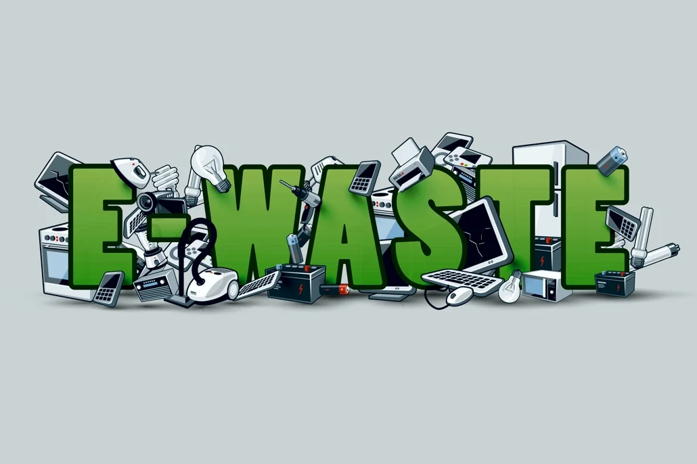
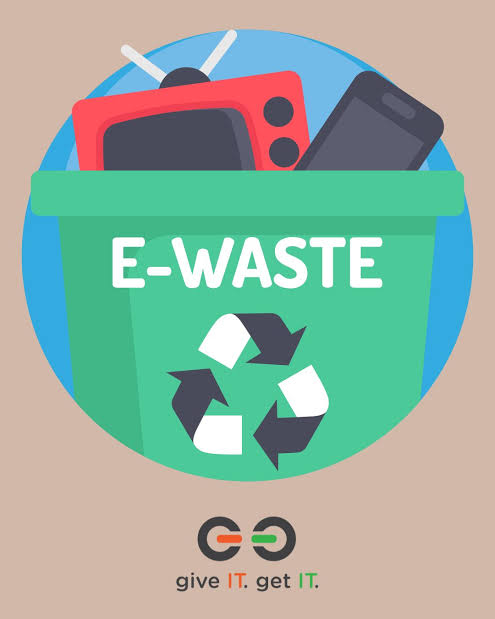

Welcome to TechTrash! Did you know that old phones, broken computers and unwanted electronics can harm our planet if they are not disposed of properly? E-waste is a growing problem, but we can all be part of the solution! Explore our website to discover what e-waste is, learn about its effects on people and the environment, and find out how you can reduce, reuse, repair and recycle electronic devices. Test your knowledge with fun quizzes and games, and become an expert on tech trash on TechTrash.